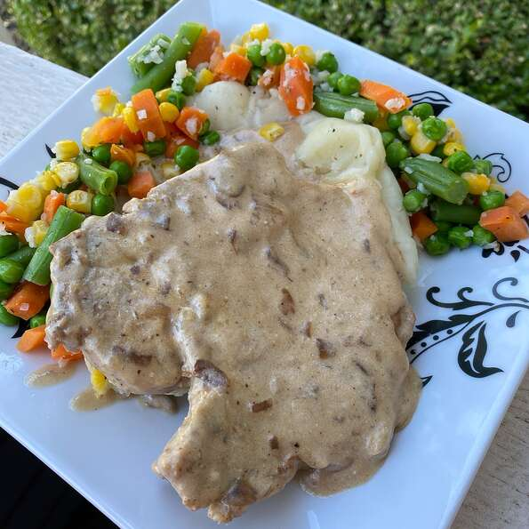

Slow Cooker French Onion Pork Chops

Home
A lighter version of a wonderful main dish. Easy to prepare and add some quick sides to. Yummy!
A lighter version of a wonderful main dish. Easy to prepare and add some quick sides to. Yummy!